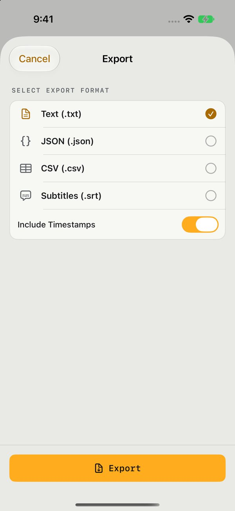

ଆପଣଙ୍କ କଣ୍ଠସ୍ୱର,ଏବେ ସିଧାସଳଖ ଟେକ୍ସଟ୍ରେ।
ମିଟିଂ, ଲେକ୍ଚର୍ କିମ୍ବା ଇଣ୍ଟରଭ୍ୟୁ ରେକର୍ଡ କରନ୍ତୁ — କିମ୍ବା ଅଡିଓ କିମ୍ବା ଭିଡିଓ ଫାଇଲ୍ ଇମ୍ପୋର୍ଟ କରନ୍ତୁ — ଏବଂ ଆପଣଙ୍କ iPhone କିମ୍ବା iPad ରେ ଟ୍ରାନ୍ସକ୍ରିପ୍ଟ ପାଆନ୍ତୁ।
ସମର୍ଥିତ iOS 26+ ଡିଭାଇସ୍ରେ ରେକର୍ଡିଂ ସମୟରେ ଲାଇଭ୍ ଟ୍ରାନ୍ସକ୍ରିପ୍ସନ୍। iOS 26+ ରେ Apple Intelligence ସକ୍ରିୟ ଥିଲେ, ଟ୍ରାନ୍ସକ୍ରିପ୍ଟ ଚାଟ୍ରେ AI ସାରାଂଶ ମାଗନ୍ତୁ।
- ସମସ୍ତ ବୈଶିଷ୍ଟ୍ୟ ମାଗଣା
- ବିଜ୍ଞାପନ ନାହିଁ
- ଇନ୍-ଆପ୍ କ୍ରୟ ନାହିଁ
- ଆକାଉଣ୍ଟ ନାହିଁ
- iPhone ଓ iPad
ପ୍ରତ୍ୟେକ ବୈଶିଷ୍ଟ୍ୟ, ମାଗଣା।
କୌଣସି ପେଡ୍ ପ୍ଲାନ୍ ନାହିଁ। ଏହି ପୃଷ୍ଠାରେ ତାଲିକାଭୁକ୍ତ ସବୁକିଛି — ରେକର୍ଡିଂ, ଫାଇଲ୍ ଇମ୍ପୋର୍ଟ, ସମସ୍ତ Whisper ମଡେଲ୍, ଏକ୍ସପୋର୍ଟ, ହିଷ୍ଟ୍ରି, ଟ୍ୟାଗ୍, Apple Intelligence ଚାଟ୍ ଏବଂ Shortcuts — ବିନା ମୂଲ୍ୟରେ ଉପଲବ୍ଧ। ଆପଣଙ୍କୁ ଆକାଉଣ୍ଟ ଖୋଲିବାକୁ ପଡ଼ିବ ନାହିଁ, ଏବଂ ଆପ୍ ବିଜ୍ଞାପନ ଦେଖାଏ ନାହିଁ।
- କୌଣସି ସବସ୍କ୍ରିପ୍ସନ୍ କିମ୍ବା ଏକକାଳୀନ କ୍ରୟ ନାହିଁ
- କୌଣସି ଇନ୍-ଆପ୍ କ୍ରୟ କିମ୍ବା ଲକ୍ ହୋଇଥିବା ବୈଶିଷ୍ଟ୍ୟ ନାହିଁ
- କୌଣସି ବିଜ୍ଞାପନ କିମ୍ବା ତୃତୀୟ-ପକ୍ଷ ଟ୍ରାକିଂ ନାହିଁ
- କୌଣସି ସାଇନ୍-ଅପ୍ କିମ୍ବା ଲଗଇନ୍ ନାହିଁ
- ରେକର୍ଡିଂ ଅବଧି କିମ୍ବା ଫାଇଲ୍ ସଂଖ୍ୟା ଉପରେ ଆପ୍ର କୌଣସି ସୀମା ନାହିଁ — ଡିଭାଇସ୍ର ଷ୍ଟୋରେଜ୍, ମେମୋରି ଏବଂ ବ୍ୟାଟେରି ସୀମା ପ୍ରଯୁଜ୍ୟ
ଅଡିଓରୁ ଟ୍ରାନ୍ସକ୍ରିପ୍ଟ
ରେକର୍ଡ କରନ୍ତୁ କିମ୍ବା ଇମ୍ପୋର୍ଟ କରନ୍ତୁ
ମାଇକ୍ରୋଫୋନ୍ରେ ରେକର୍ଡ କରିବାକୁ ଟ୍ୟାପ୍ କରନ୍ତୁ, କିମ୍ବା Files କିମ୍ବା Photos ରୁ ଅଡିଓ କିମ୍ବା ଭିଡିଓ ଫାଇଲ୍ ବାଛନ୍ତୁ। ରେକର୍ଡିଂ ସମୟରେ ଆପଣ ପଜ୍ ଏବଂ ପୁନଃ ଆରମ୍ଭ କରିପାରିବେ।
ପଢ଼ନ୍ତୁ, ସମ୍ପାଦନା କରନ୍ତୁ ଏବଂ ଏକ୍ସପୋର୍ଟ କରନ୍ତୁ
ଟାଇମ୍ଷ୍ଟ୍ୟାମ୍ପ୍ ସହିତ ଟେକ୍ସଟ୍ ଯାଞ୍ଚ କରନ୍ତୁ, ଭୁଲ୍ ସୁଧାରନ୍ତୁ, ଏବଂ TXT, CSV, JSON କିମ୍ବା SRT ସବ୍ଟାଇଟଲ୍ ଭାବେ ସେୟାର କରନ୍ତୁ।
ଆପଣ ଏଥିରେ କ’ଣ କରିପାରିବେ
ଆପ୍ର ମୁଖ୍ୟ ଅଂଶଗୁଡ଼ିକର ନିକଟତର ପରିଚୟ।

ରେକର୍ଡ କରନ୍ତୁ କିମ୍ବା ନିଜ ଫାଇଲ୍ ଆଣନ୍ତୁ
ଗୋଟିଏ ଟ୍ୟାପ୍ରେ ରେକର୍ଡିଂ ଆରମ୍ଭ କରନ୍ତୁ, କିମ୍ବା ପୂର୍ବରୁ ଥିବା ଫାଇଲ୍ ଇମ୍ପୋର୍ଟ କରନ୍ତୁ। ଆପ୍ ଅଡିଓକୁ ରୂପାନ୍ତର କରି ଡିଭାଇସ୍ରେ ଟ୍ରାନ୍ସକ୍ରାଇବ୍ କରେ।
- ପଜ୍ ଓ ରିଜ୍ୟୁମ୍ ସହିତ ମାଇକ୍ରୋଫୋନ୍ ରେକର୍ଡିଂ, ଏବଂ ବାହ୍ୟ ମାଇକ୍ ପାଇଁ ମାଇକ୍ରୋଫୋନ୍ ସ୍ୱିଚର୍
- ସମର୍ଥିତ iPhone ରେ Live Activity ମାଧ୍ୟମରେ ଲକ୍ ସ୍କ୍ରିନ୍ ଏବଂ Dynamic Island ରେ ରେକର୍ଡିଂ ସ୍ଥିତି
- Files ଆପ୍ରୁ M4A, WAV, MP3, MP4 ଏବଂ MOV ଭଳି ଅଡିଓ ଓ ଭିଡିଓ ଇମ୍ପୋର୍ଟ କରନ୍ତୁ
- ଆପଣଙ୍କ Photos ଲାଇବ୍ରେରିରୁ ସିଧାସଳଖ ଭିଡିଓ ବାଛନ୍ତୁ
- ଦୀର୍ଘ ସେସନ୍ ପାଇଁ ବୈକଳ୍ପିକ "Keep Screen On"

Whisper, ଆପଣଙ୍କ ଡିଭାଇସ୍ରେ ଚାଲୁଛି
ଏହି ଆପ୍ whisper.cpp ମାଧ୍ୟମରେ OpenAI ର ଓପନ୍ Whisper ମଡେଲ୍ ବ୍ୟବହାର କରେ, ଏବଂ ଯେଉଁଠି ଉପଲବ୍ଧ ସେଠାରେ Metal GPU ଆକ୍ସିଲେରେସନ୍ ସହିତ ଚାଲେ। ଭିନ୍ନ ମଡେଲ୍ ବାଛି ଆପଣ ଗତି ଏବଂ ସଠିକତା ମଧ୍ୟରେ ସନ୍ତୁଳନ ରଖିପାରିବେ।
- 10ଟି Whisper ମଡେଲ୍, Tiny (ପ୍ରାୟ 15 MB) ରୁ Large v3 Turbo ଏବଂ Medium (ପ୍ରାୟ 1.5 GB ପର୍ଯ୍ୟନ୍ତ)
- ସ୍ୱୟଂଚାଳିତ ଭାଷା ଚିହ୍ନଟ, କିମ୍ବା 18ଟି ଭାଷାରୁ ବାଛନ୍ତୁ
- ଫଳାଫଳର ବୈକଳ୍ପିକ ଇଂରାଜୀ ଅନୁବାଦ
- ସମର୍ଥିତ ଡିଭାଇସ୍ରେ ପ୍ରକ୍ରିୟାକରଣକୁ ଦ୍ରୁତ କରିପାରୁଥିବା ବୈକଳ୍ପିକ Core ML ଏନକୋଡର୍ ଡାଉନଲୋଡ୍
- iOS 26 କିମ୍ବା ପରବର୍ତ୍ତୀ ସଂସ୍କରଣରେ Apple ର ଅନ୍-ଡିଭାଇସ୍ ସ୍ପିଚ୍ ଇଞ୍ଜିନ୍ ମଧ୍ୟ ବିକଳ୍ପ ଭାବେ ଉପଲବ୍ଧ

ଟାଇମ୍ଲାଇନ୍ କିମ୍ବା ରିଡିଂ ଭ୍ୟୁ
ସଫା ଟେକ୍ସଟ୍ ଭ୍ୟୁ ଏବଂ ଟାଇମ୍ଷ୍ଟ୍ୟାମ୍ପ୍ ଥିବା ଟାଇମ୍ଲାଇନ୍ ଭ୍ୟୁ ମଧ୍ୟରେ ବଦଳାନ୍ତୁ। କ’ଣ କୁହାଯାଇଥିଲା ଯାଞ୍ଚ କରିବାକୁ ମୂଳ ଅଡିଓ ଚଲାନ୍ତୁ, ଏବଂ ଆବଶ୍ୟକ ହେଲେ ଟେକ୍ସଟ୍ ସୁଧାରନ୍ତୁ।
- ବୈକଳ୍ପିକ ଟାଇମ୍ଷ୍ଟ୍ୟାମ୍ପ୍ ସହିତ ଟେକ୍ସଟ୍ ଏବଂ ଟାଇମ୍ଲାଇନ୍ ଭ୍ୟୁ
- ନିୟନ୍ତ୍ରଣଯୋଗ୍ୟ ଗତି ଏବଂ ସ୍ଥାନ ସହିତ ଅଡିଓ ପ୍ଲେବ୍ୟାକ୍
- ଟ୍ରାନ୍ସକ୍ରିପ୍ଟ ଏବଂ ତାହାର ଶୀର୍ଷକ ସମ୍ପାଦନା କରନ୍ତୁ
- ଗୋଟିଏ ପାରାଗ୍ରାଫ୍ କିମ୍ବା ସମ୍ପୂର୍ଣ୍ଣ ଟେକ୍ସଟ୍ କପି କରନ୍ତୁ
- ଟ୍ରାନ୍ସକ୍ରିପ୍ଟ ଭିତରେ ଖୋଜନ୍ତୁ

ଖୋଜିହେଉଥିବା ହିଷ୍ଟ୍ରି
ପ୍ରତ୍ୟେକ ଟ୍ରାନ୍ସକ୍ରିପ୍ଟ ଆପଣଙ୍କ ଡିଭାଇସ୍ରେ ସଂରକ୍ଷିତ ରହେ, ତେଣୁ ଆପଣ ପରେ ଏହାକୁ ପୁଣି ଦେଖିପାରିବେ।
- ଶୀର୍ଷକ, ଟେକ୍ସଟ୍ କିମ୍ବା ଟ୍ୟାଗ୍ ଦ୍ୱାରା ଖୋଜନ୍ତୁ
- ଫେଭରିଟ୍ ଏବଂ ସର୍ଟିଂ
- ସମସ୍ତ ଟ୍ରାନ୍ସକ୍ରିପ୍ଟରେ ଯୋଗ, ପୁନଃନାମକରଣ, ମିଶ୍ରଣ ଏବଂ ଡିଲିଟ୍ କରିହେଉଥିବା ଟ୍ୟାଗ୍
- ଟ୍ୟାଗ୍ ଦ୍ୱାରା ହିଷ୍ଟ୍ରି ଫିଲ୍ଟର୍ କରନ୍ତୁ

ଟେକ୍ସଟ୍, ଡାଟା କିମ୍ବା ସବ୍ଟାଇଟଲ୍
ପରବର୍ତ୍ତୀ କାମ ପାଇଁ ଉପଯୁକ୍ତ ଫର୍ମାଟ୍ରେ ଟ୍ରାନ୍ସକ୍ରିପ୍ଟ ସେୟାର କରନ୍ତୁ — ନୋଟ୍ସ, ସ୍ପ୍ରେଡ୍ସିଟ୍, ସ୍କ୍ରିପ୍ଟ କିମ୍ବା ଭିଡିଓ ଏଡିଟର୍।
- ନୋଟ୍ସ ଏବଂ ଡକ୍ୟୁମେଣ୍ଟ୍ ପାଇଁ TXT
- ସ୍ପ୍ରେଡ୍ସିଟ୍ ପାଇଁ CSV
- ଆପଣଙ୍କ ନିଜ ଟୁଲ୍ ପାଇଁ ସେଗ୍ମେଣ୍ଟ୍ ସହିତ JSON
- ଭିଡିଓ ଏଡିଟିଂ ପାଇଁ SRT ସବ୍ଟାଇଟଲ୍
- ମୂଳ ରେକର୍ଡିଂକୁ ଅଡିଓ ଫାଇଲ୍ ଭାବେ ସେୟାର କରନ୍ତୁ
ଟ୍ରାନ୍ସକ୍ରିପ୍ଟ ବିଷୟରେ ପଚାରନ୍ତୁ iOS 26+
Apple Intelligence ସମର୍ଥନ କରୁଥିବା ଡିଭାଇସ୍ରେ ଆପଣ ଟ୍ରାନ୍ସକ୍ରିପ୍ଟ ସହିତ ଚାଟ୍ କରିପାରିବେ — ସାରାଂଶ, ମୁଖ୍ୟ ନିଷ୍ପତ୍ତି କିମ୍ବା ଆକ୍ସନ୍ ଆଇଟମ୍ ମାଗନ୍ତୁ — ଏବଂ ଶୀର୍ଷକ ତିଆରି କରନ୍ତୁ। ପ୍ରତ୍ୟେକ ଟ୍ରାନ୍ସକ୍ରିପ୍ଟ ପାଇଁ ଚାଟ୍ ସଂରକ୍ଷିତ ରହେ। ଲମ୍ବା ଟ୍ରାନ୍ସକ୍ରିପ୍ଟକୁ ବିଭାଗରେ ପଢ଼ାଯାଏ। ବୈକଳ୍ପିକ Private Cloud Compute ମୋଡ୍ (iOS 27 କିମ୍ବା ପରବର୍ତ୍ତୀ) ଡିଫଲ୍ଟ୍ ଭାବେ ବନ୍ଦ ଥାଏ।
Shortcuts ଏବଂ Siri
ରେକର୍ଡିଂ ଆରମ୍ଭ କିମ୍ବା ବନ୍ଦ କରିବାକୁ, ମିଡିଆ ଫାଇଲ୍ ଟ୍ରାନ୍ସକ୍ରାଇବ୍ କରିବାକୁ, ଟ୍ରାନ୍ସକ୍ରିପ୍ସନ୍ ଖୋଜିବାକୁ, ଟ୍ରାନ୍ସକ୍ରିପ୍ଟ ଟେକ୍ସଟ୍ ପାଇବାକୁ, କିମ୍ବା ଟ୍ୟାଗ୍ ଓ ଫେଭରିଟ୍ ଯୋଗ କରିବାକୁ App Shortcuts ବ୍ୟବହାର କରନ୍ତୁ — ଅଟୋମେସନ୍ ପାଇଁ ସୁବିଧାଜନକ। କିଛି କାର୍ଯ୍ୟ ପାଇଁ iOS ର ନୂତନ ସଂସ୍କରଣ ଆବଶ୍ୟକ।
ସମସ୍ତ ବୈଶିଷ୍ଟ୍ୟ — ସବୁ ମାଗଣା
ଆପ୍ ବର୍ତ୍ତମାନ ପ୍ରଦାନ କରୁଥିବା ସମସ୍ତ ସୁବିଧାର ସମ୍ପୂର୍ଣ୍ଣ ତାଲିକା। ଏଠାରେ କିଛି ବି କିଣିବାକୁ ପଡ଼ିବ ନାହିଁ।
କ୍ୟାପ୍ଚର୍
- ମାଇକ୍ରୋଫୋନ୍ ରେକର୍ଡିଂମାଗଣା
- ରେକର୍ଡିଂ ପଜ୍ ଓ ରିଜ୍ୟୁମ୍କଲ୍ ଭଳି ବାଧାକୁ ମଧ୍ୟ ରେକର୍ଡିଂ ସମ୍ଭାଳେମାଗଣା
- ମାଇକ୍ରୋଫୋନ୍ ବଦଳାନ୍ତୁମାଗଣା
- ରେକର୍ଡିଂ ସମୟରେ Live Activityଲକ୍ ସ୍କ୍ରିନ୍ ଏବଂ Dynamic Islandମାଗଣା
- ଅଡିଓ ଫାଇଲ୍ ଇମ୍ପୋର୍ଟ କରନ୍ତୁM4A, WAV, MP3 ଏବଂ ଅନ୍ୟାନ୍ୟ ସାଧାରଣ ଫର୍ମାଟ୍ମାଗଣା
- ଭିଡିଓ ଫାଇଲ୍ ଇମ୍ପୋର୍ଟ କରନ୍ତୁMP4, MOV ଏବଂ ଅନ୍ୟାନ୍ୟ ସାଧାରଣ ଫର୍ମାଟ୍ମାଗଣା
- Photos ରୁ ଭିଡିଓ ଇମ୍ପୋର୍ଟ କରନ୍ତୁମାଗଣା
- Live Transcribeଆପଣ କହିବା ସଙ୍ଗେ ସଙ୍ଗେ ଟେକ୍ସଟ୍ ଦେଖାଯାଏ · iOS 26+ମାଗଣା
ସ୍ପିଚ୍ ରେକଗ୍ନିସନ୍
- ଅନ୍-ଡିଭାଇସ୍ Whisper (whisper.cpp)ମାଗଣା
- ସମସ୍ତ 10ଟି Whisper ମଡେଲ୍Tiny, Base, Small, Medium, Large v3 Turbo ଏବଂ କମ୍ପାକ୍ଟ ପ୍ରକାରମାଗଣା
- Apple ଅନ୍-ଡିଭାଇସ୍ ସ୍ପିଚ୍ ଇଞ୍ଜିନ୍iOS 26+, ଭାଷା iOS ଦ୍ୱାରା ପରିଚାଳିତମାଗଣା
- ଅଟୋ-ଡିଟେକ୍ଟ୍ କିମ୍ବା 18ଟି ଭାଷାରୁ ବାଛନ୍ତୁମାଗଣା
- ଇଂରାଜୀକୁ ଅନୁବାଦ କରନ୍ତୁମାଗଣା
- Metal GPU ଆକ୍ସିଲେରେସନ୍ଯେଉଁଠି ଡିଭାଇସ୍ ଏହାକୁ ସମର୍ଥନ କରେମାଗଣା
- Core ML ଏନକୋଡର୍ (ବୈକଳ୍ପିକ ଡାଉନଲୋଡ୍)ମାଗଣା
ସଠିକତା ଓ କାର୍ଯ୍ୟଦକ୍ଷତା ଟୁଲ୍
- ନିରବ ଅଂଶ ଛାଡ଼ନ୍ତୁଭଏସ୍ ଆକ୍ଟିଭିଟି ଡିଟେକ୍ସନ୍ (VAD)ମାଗଣା
- ଅଡିଓ ସଫା କରନ୍ତୁଶବ୍ଦ ହ୍ରାସ ଏବଂ ଭଲ୍ୟୁମ୍ ସମାନୀକରଣମାଗଣା
- ଶବ୍ଦକୋଷ ସଙ୍କେତନାମ ଏବଂ ଶବ୍ଦ ଯାହା ମଡେଲ୍ ଆଶା କରିବା ଉଚିତ୍ମାଗଣା
- Flash Attentionମେମୋରି ବ୍ୟବହାର କମାଇ ପାରିବ ଏବଂ ପ୍ରକ୍ରିୟାକରଣ ତ୍ୱରାନ୍ୱିତ କରିପାରିବମାଗଣା
- ଟାଇମ୍ଷ୍ଟ୍ୟାମ୍ପ୍ ସାମିଲ କରନ୍ତୁମାଗଣା
ପଠନ ଓ ସମ୍ପାଦନା
- ଟେକ୍ସଟ୍ ଭ୍ୟୁ ଏବଂ ଟାଇମ୍ଲାଇନ୍ ଭ୍ୟୁମାଗଣା
- ଗତି ନିୟନ୍ତ୍ରଣ ସହିତ ଅଡିଓ ପ୍ଲେବ୍ୟାକ୍ମାଗଣା
- ଟ୍ରାନ୍ସକ୍ରିପ୍ଟ ଟେକ୍ସଟ୍ ଏବଂ ଶୀର୍ଷକ ସମ୍ପାଦନାମାଗଣା
- ପାରାଗ୍ରାଫ୍ କିମ୍ବା ସମ୍ପୂର୍ଣ୍ଣ ଟେକ୍ସଟ୍ କପିମାଗଣା
- ଟ୍ରାନ୍ସକ୍ରିପ୍ଟ ଭିତରେ ଖୋଜନ୍ତୁମାଗଣା
ହିଷ୍ଟ୍ରି ଓ ସଂଗଠନ
- ସଂରକ୍ଷିତ ଟ୍ରାନ୍ସକ୍ରିପ୍ସନ୍ ହିଷ୍ଟ୍ରିମାଗଣା
- ଶୀର୍ଷକ, ଟେକ୍ସଟ୍ କିମ୍ବା ଟ୍ୟାଗ୍ ଦ୍ୱାରା ଖୋଜନ୍ତୁମାଗଣା
- ଫେଭରିଟ୍ ଏବଂ ସର୍ଟିଂମାଗଣା
- ଟ୍ୟାଗ୍: ଯୋଗ କରନ୍ତୁ, ନାମ ବଦଳାନ୍ତୁ, ମିଶାନ୍ତୁ, ଡିଲିଟ୍ କରନ୍ତୁମାଗଣା
- ଟ୍ୟାଗ୍ ଦ୍ୱାରା ଫିଲ୍ଟର୍ କରନ୍ତୁମାଗଣା
ଏକ୍ସପୋର୍ଟ ଓ ସେୟାର
- ଟେକ୍ସଟ୍ (.txt)ମାଗଣା
- CSV (.csv)ମାଗଣା
- JSON (.json)ମାଗଣା
- ସବ୍ଟାଇଟଲ୍ (.srt)ମାଗଣା
- ମୂଳ ଅଡିଓ ସେୟାର କରନ୍ତୁମାଗଣା
- ସେୟାର ସିଟ୍ ମାଧ୍ୟମରେ ଟେକ୍ସଟ୍ ସେୟାର କରନ୍ତୁମାଗଣା
Apple Intelligence
- ଟ୍ରାନ୍ସକ୍ରିପ୍ଟ ବିଷୟରେ ଚାଟ୍ସମର୍ଥିତ ଡିଭାଇସ୍ରେ iOS 26+ମାଗଣା
- ପ୍ରତ୍ୟେକ ଟ୍ରାନ୍ସକ୍ରିପ୍ଟ ପାଇଁ ସଂରକ୍ଷିତ ଚାଟ୍ ହିଷ୍ଟ୍ରିମାଗଣା
- ଶୀର୍ଷକ ତିଆରି କରନ୍ତୁମାଗଣା
- Private Cloud Compute ମୋଡ୍ବୈକଳ୍ପିକ · iOS 27+ · ଡିଫଲ୍ଟ୍ରେ ବନ୍ଦମାଗଣା
ଅଟୋମେସନ୍ ଓ ଆପ୍
- Shortcuts ଏବଂ Siri କାର୍ଯ୍ୟମାଗଣା
- iPhone ଏବଂ iPad ଲେଆଉଟ୍ମାଗଣା
- ଲାଇଟ୍, ଡାର୍କ୍ କିମ୍ବା ସିଷ୍ଟମ୍ ଦୃଶ୍ୟମାଗଣା
- 11ଟି ଭାଷାରେ ଇଣ୍ଟରଫେସ୍ମାଗଣା
- ମଡେଲ୍ ଏବଂ ଷ୍ଟୋରେଜ୍ ପରିଚାଳନାମାଗଣା
iOS ସଂସ୍କରଣ ଚିହ୍ନିତ ବୈଶିଷ୍ଟ୍ୟଗୁଡ଼ିକ ପାଇଁ ସେହି ସଂସ୍କରଣ କିମ୍ବା ପରବର୍ତ୍ତୀ ସଂସ୍କରଣ ଆବଶ୍ୟକ। Apple Intelligence ବୈଶିଷ୍ଟ୍ୟଗୁଡ଼ିକ ଡିଭାଇସ୍ ସମର୍ଥନ, ଅଞ୍ଚଳ ଏବଂ ଭାଷା ସେଟିଂ ଉପରେ ମଧ୍ୟ ନିର୍ଭର କରେ।
ଆପଣଙ୍କ ଅଡିଓକୁ ଆପଣଙ୍କ ଡିଭାଇସ୍ରେ ରଖିବା ପାଇଁ ଡିଜାଇନ୍ କରାଯାଇଛି
Whisper ଟ୍ରାନ୍ସକ୍ରିପ୍ସନ୍ ସ୍ଥାନୀୟ ଭାବେ ଚାଲେ। ଆପ୍ରେ ବିଜ୍ଞାପନ, ଆନାଲିଟିକ୍ସ SDK କିମ୍ବା ତୃତୀୟ-ପକ୍ଷ ଟ୍ରାକିଂ ନାହିଁ, ଏବଂ ଏହା ଆପଣଙ୍କ ଅଡିଓ କିମ୍ବା ଟ୍ରାନ୍ସକ୍ରିପ୍ଟ ଡେଭଲପର୍ଙ୍କୁ ପଠାଏ ନାହିଁ।
ଆପଣଙ୍କ ଡିଭାଇସ୍ରେ ରହେ
ରେକର୍ଡିଂ, ଇମ୍ପୋର୍ଟ କରାଯାଇଥିବା ମିଡିଆ, ଟ୍ରାନ୍ସକ୍ରିପ୍ଟ, ଟ୍ୟାଗ୍, ଚାଟ୍ ଏବଂ ସେଟିଂ ଆପଣଙ୍କ ଡିଭାଇସ୍ର ଆପ୍ରେ ସଂରକ୍ଷିତ ରହେ। ଆପଣ ଯେକୌଣସି ସମୟରେ ଆପ୍ରୁ ସେଗୁଡ଼ିକୁ ଡିଲିଟ୍ କରିପାରିବେ।
ଆପ୍ କେତେବେଳେ ସଂଯୋଗ କରେ
Hugging Face ରୁ Whisper, VAD ଏବଂ Core ML ମଡେଲ୍ ଫାଇଲ୍ ଡାଉନଲୋଡ୍ କରିବାକୁ; ନୂତନ ସଂସ୍କରଣ ପାଇଁ App Store ଯାଞ୍ଚ କରିବାକୁ; ଏବଂ Apple ର ଇଞ୍ଜିନ୍ ପାଇଁ iOS ସ୍ପିଚ୍ ମଡେଲ୍ ଡାଉନଲୋଡ୍ କଲାବେଳେ।
ଆପଣଙ୍କ ପସନ୍ଦ
Apple Intelligence ପାଇଁ Private Cloud Compute ଡିଫଲ୍ଟ୍ ଭାବେ ବନ୍ଦ ଥାଏ। ଯଦି ଆପଣ ଏହାକୁ ଚାଲୁ କରନ୍ତି, ତେବେ ଟ୍ରାନ୍ସକ୍ରିପ୍ଟ ଟେକ୍ସଟ୍ ଏବଂ ଆପଣଙ୍କ ପ୍ରଶ୍ନ Apple ର Private Cloud Compute ଦ୍ୱାରା ପ୍ରୋସେସ୍ ହୁଏ। ଏକ୍ସପୋର୍ଟ ସେୟାର କଲେ ତାହା ଆପଣ ବାଛିଥିବା ସ୍ଥାନକୁ ଯାଏ।
ଆରମ୍ଭ କରିବା ପୂର୍ବରୁ
ଡିଭାଇସ୍ ଓ ସିଷ୍ଟମ୍
iOS / iPadOS 17.0 କିମ୍ବା ପରବର୍ତ୍ତୀ ସଂସ୍କରଣ ସହିତ iPhone କିମ୍ବା iPad। Live Transcribe, Apple ର ସ୍ପିଚ୍ ଇଞ୍ଜିନ୍ ଏବଂ ଅନ୍-ଡିଭାଇସ୍ Apple Intelligence ପାଇଁ iOS 26 କିମ୍ବା ପରବର୍ତ୍ତୀ; Private Cloud Compute ପାଇଁ iOS 27 କିମ୍ବା ପରବର୍ତ୍ତୀ ଆବଶ୍ୟକ।
ଷ୍ଟୋରେଜ୍ ଓ ନେଟୱାର୍କ
ମଡେଲ୍ ଡାଉନଲୋଡ୍ କରିବାକୁ ଇଣ୍ଟରନେଟ୍ ସଂଯୋଗ ଏବଂ ଖାଲି ଷ୍ଟୋରେଜ୍ ଆବଶ୍ୟକ (ମଡେଲ୍ ଅନୁସାରେ ପ୍ରାୟ 15 MB ରୁ 1.5 GB)। ରେକର୍ଡିଂ ପାଇଁ ମାଇକ୍ରୋଫୋନ୍ ଅନୁମତି ଆବଶ୍ୟକ।
ସାଧାରଣତଃ ପଚରାଯାଉଥିବା ପ୍ରଶ୍ନ
ଆପ୍ଟି କ’ଣ ସତରେ ମାଗଣା?
ହଁ। ବର୍ତ୍ତମାନ ପ୍ରତ୍ୟେକ ବୈଶିଷ୍ଟ୍ୟ ବ୍ୟବହାର ପାଇଁ ମାଗଣା। କୌଣସି ବିଜ୍ଞାପନ, ଇନ୍-ଆପ୍ କ୍ରୟ, ସବସ୍କ୍ରିପ୍ସନ୍ କିମ୍ବା ଆକାଉଣ୍ଟ ସାଇନ୍-ଅପ୍ ନାହିଁ।
ଏହା ଅଫଲାଇନ୍ରେ କାମ କରେ କି?
Whisper ଟ୍ରାନ୍ସକ୍ରିପ୍ସନ୍ ଆପଣଙ୍କ ଡିଭାଇସ୍ରେ ଚାଲିବା ପାଇଁ ଡିଜାଇନ୍ କରାଯାଇଛି। ମଡେଲ୍ ଡାଉନଲୋଡ୍ କରିବାକୁ ଥରେ ଇଣ୍ଟରନେଟ୍ ସଂଯୋଗ ଆବଶ୍ୟକ; ତା’ପରେ ସେହି ମଡେଲ୍ ସହିତ ରେକର୍ଡିଂ ଏବଂ ଟ୍ରାନ୍ସକ୍ରିପ୍ସନ୍ ସାଧାରଣତଃ ସଂଯୋଗ ବିନା ହୋଇପାରିବ। ଅନ୍ୟ ମଡେଲ୍ ଡାଉନଲୋଡ୍, ଅପଡେଟ୍ ଯାଞ୍ଚ ଏବଂ ବୈକଳ୍ପିକ Private Cloud Compute ମୋଡ୍ ପାଇଁ ସଂଯୋଗ ଆବଶ୍ୟକ।
ମୋର ଅଡିଓ ସର୍ଭରକୁ ପଠାଯାଏ କି?
Whisper ଟ୍ରାନ୍ସକ୍ରିପ୍ସନ୍ ସ୍ଥାନୀୟ ଭାବେ ଚାଲେ ଏବଂ ଆପ୍ ଡେଭଲପର୍ଙ୍କୁ ଅଡିଓ କିମ୍ବା ଟ୍ରାନ୍ସକ୍ରିପ୍ଟ ପଠାଏ ନାହିଁ। ଏକମାତ୍ର ବ୍ୟତିକ୍ରମ — ଯାହା ଆପଣଙ୍କ ନିୟନ୍ତ୍ରଣରେ ଅଛି — Apple Intelligence ଚାଟ୍ ପାଇଁ ବୈକଳ୍ପିକ Private Cloud Compute ମୋଡ୍, ଯାହା ଟ୍ରାନ୍ସକ୍ରିପ୍ଟ ଟେକ୍ସଟ୍ ଏବଂ ଆପଣଙ୍କ ପ୍ରଶ୍ନ Apple ର Private Cloud Compute କୁ ପଠାଏ। ଏହା ଡିଫଲ୍ଟ୍ ଭାବେ ବନ୍ଦ ଥାଏ।
ମୁଁ କେଉଁ ଫାଇଲ୍ ଇମ୍ପୋର୍ଟ ଏବଂ ଏକ୍ସପୋର୍ଟ କରିପାରିବି?
ଆପଣ Files ରୁ M4A, WAV, MP3, MP4 ଏବଂ MOV ଭଳି ସାଧାରଣ ଅଡିଓ ଓ ଭିଡିଓ ଫର୍ମାଟ୍ ଏବଂ Photos ରୁ ଭିଡିଓ ଇମ୍ପୋର୍ଟ କରିପାରିବେ। ଟ୍ରାନ୍ସକ୍ରିପ୍ଟକୁ TXT, CSV, JSON କିମ୍ବା SRT ଭାବେ ଏକ୍ସପୋର୍ଟ କରାଯାଇପାରିବ, ଏବଂ ରେକର୍ଡିଂକୁ ଅଡିଓ ଫାଇଲ୍ ଭାବେ ସେୟାର କରାଯାଇପାରିବ।
କେଉଁ ଭାଷାଗୁଡ଼ିକ ସମର୍ଥିତ?
ଟ୍ରାନ୍ସକ୍ରିପ୍ସନ୍ ପାଇଁ ଆପଣ ସ୍ୱୟଂଚାଳିତ ଚିହ୍ନଟ ବ୍ୟବହାର କରିପାରିବେ କିମ୍ବା ଇଂରାଜୀ, ଜାପାନୀ, ଚୀନୀ, କୋରିଆନ୍, ସ୍ପାନିଶ୍, ଫ୍ରେଞ୍ଚ, ଜର୍ମାନ୍, ଇଟାଲିଆନ୍, ପର୍ତ୍ତୁଗୀଜ୍, ରୁଷୀୟ, ଆରବୀ, ହିନ୍ଦୀ, ଡଚ୍, ପୋଲିଶ୍, ତୁର୍କୀ, ଭିଏତନାମୀ, ଥାଇ କିମ୍ବା ଇଣ୍ଡୋନେସିଆନ୍ ବାଛିପାରିବେ। ଭାଷା ଅନୁସାରେ ଫଳାଫଳ ଭିନ୍ନ ହୋଇପାରେ। ଆପ୍ର ଇଣ୍ଟରଫେସ୍ 11ଟି ଭାଷାରେ ଉପଲବ୍ଧ।
ଏହା ଭିଡିଓ ପାଇଁ ସବ୍ଟାଇଟଲ୍ ତିଆରି କରିପାରିବ କି?
ହଁ। ଗୋଟିଏ ଭିଡିଓ ଇମ୍ପୋର୍ଟ କରନ୍ତୁ, ତାହାକୁ ଟ୍ରାନ୍ସକ୍ରାଇବ୍ କରନ୍ତୁ, ଏବଂ SRT ଭାବେ ଏକ୍ସପୋର୍ଟ କରନ୍ତୁ। ଅଧିକାଂଶ ଭିଡିଓ ଏଡିଟର୍ SRT ଫାଇଲ୍ ଇମ୍ପୋର୍ଟ କରିପାରନ୍ତି। ସବ୍ଟାଇଟଲ୍ ସମୟ ଚିହ୍ନଟ ହୋଇଥିବା ସେଗ୍ମେଣ୍ଟ୍ ଅନୁସାରେ ହୁଏ, ତେଣୁ ଆପଣ ନିଜ ଏଡିଟର୍ରେ ତାହାକୁ ସମାୟୋଜନ କରିପାରିବେ।
ଗୋଟିଏ ରେକର୍ଡିଂ କେତେ ଲମ୍ବା ହୋଇପାରିବ?
ଆପ୍ କୌଣସି ନିର୍ଦ୍ଦିଷ୍ଟ ସୀମା ରଖେ ନାହିଁ। ବାସ୍ତବରେ, ବହୁତ ଲମ୍ବା ଅଡିଓ ଆପଣଙ୍କ ଡିଭାଇସ୍ର ଖାଲି ଷ୍ଟୋରେଜ୍, ମେମୋରି ଏବଂ ବ୍ୟାଟେରି ଉପରେ ନିର୍ଭର କରେ, ଏବଂ ବଡ଼ ମଡେଲ୍ ଅଧିକ ସମୟ ନିଏ। ଯଦି ଲମ୍ବା ଫାଇଲ୍ ବିଫଳ ହୁଏ, ତେବେ ଛୋଟ ମଡେଲ୍ କିମ୍ବା Flash Attention ସାହାଯ୍ୟ କରିପାରେ।
ଏହା କ’ଣ OpenAI ର ଅଧିକୃତ ଆପ୍?
ନା। ଏହା ଏକ ସ୍ୱାଧୀନ ଆପ୍ ଯାହା ଓପନ୍-ସୋର୍ସ whisper.cpp ପ୍ରୋଜେକ୍ଟ ମାଧ୍ୟମରେ OpenAI ର ମୁକ୍ତ Whisper ମଡେଲ୍ ଚଲାଏ। ଏହାର OpenAI ସହିତ କୌଣସି ସମ୍ପର୍କ କିମ୍ବା ଅନୁମୋଦନ ନାହିଁ।